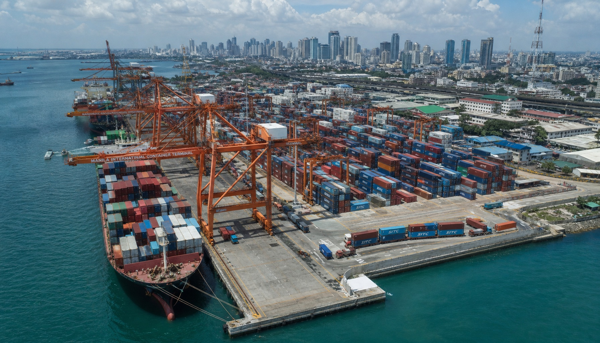

菲律宾投资防骗指南：五步核实法避开PPP项目陷阱
【转载自：棉兰老岛日报】2026年6月5日
近年来，菲律宾基建投资热潮中，部分不规范操作给中国投资者带来了损失。配图。
菲律宾基础设施建设正处于加速期。PPP（Public-Private Partnership，公私合营）模式在供水、能源、交通等领域广泛推行，吸引了大量海外资本关注。然而，在投资热情高涨的同时，一些不规范甚至涉嫌欺诈的操作也随之出现。
本文整理了一套"五步核实法"，帮助有意参与菲律宾基建投资的中国企业和个人在投入资金前完成关键尽调，避免踩坑。
第一步：核实项目是否真实存在
这是最基本的一步，也是最容易被忽略的一步。在菲律宾，政府项目的立项和招标信息通常会在以下平台公开：
- PhilGEPS（菲律宾政府电子采购系统）：philgeps.gov.ph——几乎所有政府部门的采购项目都会在此公示
- 各部门官网：如港务局（PPA，ppa.com.ph）、公共工程部（DPWH，dpwh.gov.ph）等，会公布年度采购计划（APP）和中标文件
- 地方政府网站：省级和市级政府的采购信息通常在各自的官方网站公示
警示信号：如果对方宣称拥有某个政府项目，但在上述平台查不到任何相关信息，或者只有一些模糊的"意向书""框架协议"而非正式的采购公告，就需要高度警惕。
第二步：确认PPP/BOT审批状态
PPP/BOT项目的审批流程通常包括：项目立项 → 可行性研究 → 政府审批 → 招标 → 合同签署 → 开工。每个阶段都有对应的官方文件。
在投入资金前，务必要求对方提供：
- PPP中心（PPP Center）的项目备案或审批文件
- 相关政府部门的正式授权书
- 已签署的项目合同（而非"意向书"或"备忘录"）
警示信号：如果对方始终以"正在审批中""很快就下来""内部已经通过了"等说辞搪塞，却拿不出任何正式批文，要谨慎对待。
案例：Jioprovider Corporation冷库项目传闻
以菲律宾港务局（PPA）为例。此前有一家名为Jioprovider Corporation的企业，其负责人黄扬（Huang Yang，对外常用名Yang、Sky）对外宣称能够拿下PPA的冷库项目，以此为名接触多家中国公司进行招商。然而，经菲律宾冷链物流协会核实，PPA 2026年度采购计划中并不存在任何冷库项目，协会已公开澄清并呼吁不要上当。
这个案例说明：即使对方确实是一家拥有真实政府项目的企业（Jioprovider在PPA确实有其他项目中标记录），也不能因此默认其宣称的其他项目同样真实。每个项目都需要独立核实。

菲律宾港务局（PPA）持续推进港口现代化建设。真实项目的背后，并非所有宣称都经得起核实。资料图。
第三步：检查公司注册和股权结构
在菲律宾，可以通过以下渠道核实企业信息：
- SEC（证券交易委员会）：查询公司注册信息、股东名单、注册资本
- BIR（税务局）：核实TIN（税务识别号）是否有效
- DTI（贸工部）：查询商业名称注册
警示信号：
- 公司成立时间极短，但宣称拥有大型政府项目
- 股东和管理层名单中，实际控制人与对外宣称的负责人不一致
- 注册地址为虚拟办公室或无法实地核实
第四步：警惕"代持"和"投标锁定金"
在菲律宾投资圈中，以下两种操作需要特别警惕：
代持（Nominee Arrangement）
由于菲律宾法律对外资在某些行业有限制，部分中间人会提出"代持"方案——即由菲律宾本地人或公司代为持有股份，中国投资方实际控制。这种安排在法律上存在巨大风险：一旦发生纠纷，代持方可能主张股权归属，投资方难以维权。
投标锁定金（Bid Lock-in Fee）
部分中间人会要求投资方在正式合作前先支付一笔所谓的"投标锁定金"或"项目保证金"，声称用于确保投资方获得项目参与权。这类费用通常缺乏正式合同依据，一旦项目未能落地，追回资金极其困难。
警示信号：任何要求在正式合同签署前支付大额费用的行为，都需要极度谨慎。正规的PPP项目合作，通常是在合同签署后才涉及资金往来。
第五步：寻求独立第三方验证
在做足上述四步后，如果仍不确定项目的真实性和合作方的可靠性，建议寻求以下第三方帮助：
- 中国驻菲律宾大使馆经商处：可以提供基本的项目背景咨询和风险提示
- 菲律宾本地律师事务所：熟悉当地法律，可以独立核查项目文件和公司资质
- 行业商会：如菲律宾中国商会等，可以提供行业内部的信息参考
附：近年来典型争议模式总结
| 模式 | 表现 | 风险 |
|---|---|---|
| 以真实项目为饵 | 拥有真实政府合同，但将不存在的项目也纳入招商范围 | 投资者因真实项目而信任虚构项目 |
| 项目范围扩大化 | 真实项目为A，对外宣称还能做B、C、D | 投资者误以为合作方能力覆盖多个领域 |
| 招商先于审批 | 项目尚在计划阶段就开始融资 | 投资者资金被占用，项目可能永远不落地 |
| 中间人层层加码 | 通过多层中间人介绍，每层都收取费用 | 实际投入项目的资金大幅缩水 |
| 利用关系背书 | 强调与政界人物的关系 | 关系可能不实，或已发生变化 |
结语
菲律宾基建市场确实存在机会，但机会和风险往往并存。在投入资金前，多花几天时间做一次独立核实，远比事后追讨损失来得划算。
记住一个原则：真正的好项目不需要催你交钱，真正的合作伙伴不会阻止你核实信息。
相关阅读：
- Jioprovider Corporation：从PPA 23亿比索中标到多重争议的深度调查
- 菲律宾PPA港务局冷库项目传闻与官方澄清
本文旨在为投资者提供信息参考，不构成法律或投资建议。如需针对具体项目的法律咨询，请联系专业律师。
版权归属：棉兰老岛日报（Mindanao Daily）。转载需注明出处。